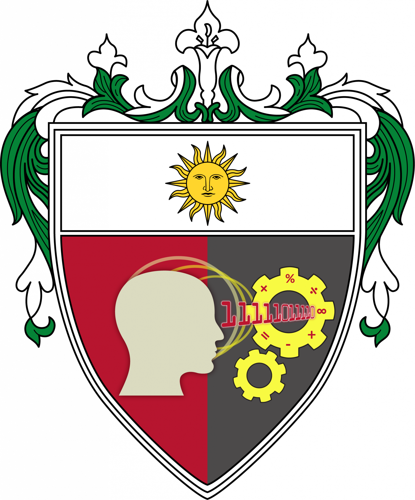

About This Project
Understanding the purpose and people behind this initiative
Globalization & Human Rights
Globalization links states through trade, technology, and migration. This interdependence makes cooperation essential for shared human rights frameworks, strengthening international institutions, and encouraging compliance across borders. In today's rules-based international order, standards and accountability are shaped by global agreements, monitoring bodies, and collective pressure. Despite all these, in reality, there are still countries and nations that violate the international order. Accountability is unattainable, and injustice unfortunately prevails, especially in the issue of Human Rights Violation, and all other issues that strip off what makes people, PEOPLE.
Global rules exist, but they are failing the people they were written to protect. In Gaza, families starve and die while the world argues over accountability. In the Philippines, state-sanctioned violence during the drug war proved that international human rights mean little to a grieving family denied justice. In America, the cruelty of locking up migrants and tearing children from their parents exposes how easily domestic politics can erase basic human decency. The crisis isn't that we lack global standards. The crisis is that when those standards are broken, ordinary people pay the price while consequences never seem to arrive.
Our Purpose
This digital project was created to shed light on pressing human rights violations happening around the world. Through interactive mind maps, data visualizations, and documented case studies, we aim to educate and raise awareness about the real human cost of state-sanctioned violence and systemic injustice.


Our Institution
Proudly developed by students of the University of Santo Tomas, under the College of Information and Computing Sciences.
CONTEM_W Digiproject
The Course
This is a digital project for CONTEM_W (The Contemporary World), a course under the College of Information and Computing Sciences at the University of Santo Tomas. The project connects global issues to our understanding of the modern world through technology and interactive media.
The Team
Section 2ITE